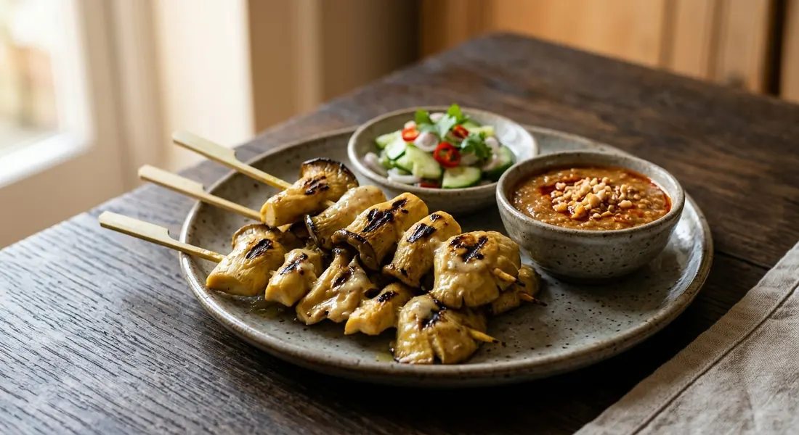

Thai mushroom satay skewers — aromatic grilled mushrooms and tofu marinated in coconut milk with traditional satay spices, served with peanut dipping sauce.

สะเต๊ะเห็ด
Aromatic grilled mushroom skewers marinated in coconut cream and traditional Thai satay spices — a vegetarian take on the classic that delivers all the complex flavours and satisfying char of traditional meat satay.
Mushroom satay represents Thai cuisine's adaptability and inclusiveness. Buddhist temple cooking (อาหารเจ) created sophisticated vegetarian versions of popular dishes, and this satay showcases how plant proteins can carry the same aromatic complexity as their meat counterparts.
The key lies in the mushrooms' natural umami richness, which pairs beautifully with the coconut-based marinade's blend of galangal, lemongrass, and coriander root — the same aromatic foundation that makes traditional satay so compelling.
| Thai | English | Amount |
|---|---|---|
| เห็ดเออรินจิ | King oyster mushrooms, or mixed mushrooms of choice | 4 large heads |
| เต้าหู้แข็ง | Firm tofu, optional, cut into chunks | 200g |
| Thai | English | Amount |
|---|---|---|
| หัวกะทิ | Coconut cream | 1 cup |
| รากผักชี | Coriander root | 6 stalks |
| ข่า | Galangal | 4 slices |
| ตะไคร้ | Lemongrass, tender parts only | 2 stalks |
| กระเทียม | Garlic | 4 cloves |
| ลูกผักชีคั่ว | Roasted coriander seed | 1 tsp |
| เมล็ดยี่หร่าคั่ว | Roasted cumin | 1/2 tsp |
| ผงขมิ้น | Turmeric powder | 1 tsp |
| น้ำตาลปี๊บ | Palm sugar | 1 tbsp |
| เกลือ | Salt | 1 tsp |
| ซอสปรุงรสเจ | Vegan seasoning sauce, or mushroom soy sauce | 1 tbsp |
| Thai | English | Amount |
|---|---|---|
| พริกแห้ง | Dried chillies | 3-4, soaked until soft |
| หัวกะทิ | Coconut cream (reserved from marinade) | 1/2 cup |
| น้ำตาลปี๊บ | Palm sugar | 1 tbsp |
| น้ำมะขามเปียก | Tamarind paste | 1 tsp |
| ถั่วลิสงคั่ว | Roasted peanuts | 1/4 cup, ground |
| น้ำมันพืช | Vegetable oil | 2 tbsp |
| Thai | English | Amount |
|---|---|---|
| แตงกวา | Cucumber | 1, sliced |
| หอมแดง | Red onion | 1 small, sliced |
| พริกสด | Fresh chillies | 2, sliced |
| ไม้เสียบ | Wooden skewers, soaked in water 30 minutes | 12-15 pieces |
King oyster mushrooms (เห็ดเออรินจิ) are ideal for satay because of their meaty texture and ability to hold their shape during grilling. Their mild, sweet flavour absorbs marinades beautifully while providing substantial bite.
Alternative mushrooms work well too: shiitake for earthiness, regular oyster mushrooms for delicate texture, or portobello for maximum meatiness. Mixing varieties creates interesting textural contrast within a single dish.
Proper slicing ensures even cooking. Cut pieces thick enough (about 1cm) that they won't dry out during grilling, but not so thick that the centres remain raw while the outsides char.
Traditional aromatics create the foundation: coriander root, galangal, lemongrass and garlic pounded to a paste. This combination appears throughout Thai cuisine and provides the distinctive herbal-citrusy base that defines satay flavour.
Coconut cream serves dual purposes — it carries the spice flavours deep into the mushrooms while providing richness that prevents them from drying during grilling. The reserved marinade becomes the basting liquid that builds flavour layers during cooking.
Marinating time matters. While mushrooms absorb flavours faster than meat, at least an hour allows the coconut mixture to penetrate properly. Overnight marinating creates even deeper, more complex results.
Medium heat prevents burning while allowing proper caramelisation. High heat chars the outside before the mushrooms cook through; too low and they steam rather than developing the desired smokiness.
Frequent turning ensures even cooking and prevents sticking. Mushrooms release moisture as they cook, which can cause sticking on inadequately heated grill grates.
Basting technique builds flavour layers. The reserved marinade applied during grilling creates multiple coating layers that intensify the taste while keeping the mushrooms moist.
Traditional nam jim satay balances sweet, salty, sour, and spicy elements. The chilli-coconut base provides heat and richness, while palm sugar and tamarind create the sweet-sour balance that makes Thai peanut sauce distinctive from Indonesian or Malaysian versions.
Texture variation comes from the ground peanut addition — some cooks prefer smooth sauce, others enjoy slight grittiness from coarsely ground nuts. The sauce should coat the back of a spoon without being too thick.
Traditional service includes fresh cucumber and red onion slices to provide cooling contrast to the rich, spiced mushrooms. The raw vegetables' crunch plays against the tender grilled texture.
Sticky rice is the traditional starch companion, its neutral sweetness and chewy texture complementing the aromatic satay. Regular jasmine rice works well too.
Contemporary presentations might include the satay in salads or as part of larger vegetarian spreads, though the traditional focus on textural and temperature contrasts shouldn't be lost.
Advance marinating actually improves the dish — the mushrooms can marinate for up to 24 hours without becoming mushy. The peanut sauce can be made days ahead and keeps well refrigerated.
Skewering can be done hours in advance, covered and refrigerated. Only the final grilling needs to happen at serving time.
The satisfaction of perfect mushroom satay lies in achieving that balance between the clean mushroom flavour enhanced (not masked) by the aromatic marinade, with the smoky char that only proper grilling provides.
This recipe is translated from the following Thai-language sources. Where they disagree, we've said so.
1. Cheewajit ครัว H&C — https://cheewajit.com/healthy-food/recipe/71266.html
2. Cookpad Thailand (Usanee Vinitketkumnuen) — https://cookpad.com/th/recipes/16867373